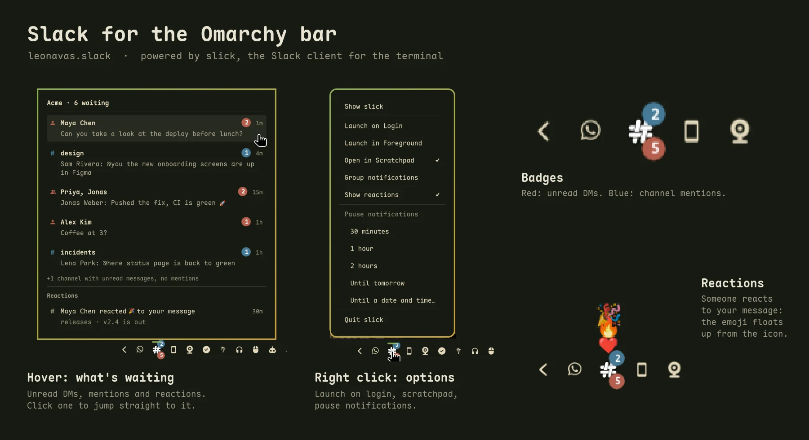

slick APP09:10
1. Install it. On Linux (x86_64 and arm64):
curl -fsSL https://slick.leonavas.com/install.sh | sh
On Windows 10/11 (x86_64), in PowerShell:
irm https://slick.leonavas.com/install.ps1 | iex
One small Rust binary, no browser inside. It has all the important features and hotkeys from Slack.
$ curl -fsSL https://slick.leonavas.com/install.sh | sh1. Install it. On Linux (x86_64 and arm64):
curl -fsSL https://slick.leonavas.com/install.sh | sh
On Windows 10/11 (x86_64), in PowerShell:
irm https://slick.leonavas.com/install.ps1 | iex
2. Run it. The first time, a small window opens Slack's own sign-in page.
slick
Optional: slick login acme goes straight to that workspace's email-and-password form.
What the TUI does today:
: emoji autocomplete, and your workspace's custom emoji, animated ones playing at the GIF's own pace.slick open, slick status, slick dnd.The keyboard is the main interface. The mouse works too.
| ↑ ↓ j k | Move through the list |
| Enter · click | Open a conversation or fold a section |
| Ctrl+K · / | Find a conversation |
| Tab · Esc | Move between the list, the message box and the thread |
| g · G | First · last conversation |
| Shift+J · Shift+K | Move a section (the order syncs with Slack) |
| m · right click | Menu for a conversation or a message |
| Enter · Shift+Enter | Send · new line |
| : | Emoji autocomplete |
| Ctrl+B · Ctrl+I | Bold · italic; Ctrl+Shift+X strike, Ctrl+Shift+C code, Ctrl+Shift+9 quote |
| ↑ in an empty box | Pick a message |
| E R T F A U L Del | On a picked message: edit, react, reply in thread, forward, save, mark unread, copy link, delete |
| Ctrl+C | Copy the picked or selected messages |
| Ctrl+B | In a thread, also send the reply to the channel |
| PgUp PgDn · wheel | Scroll; at the top, load older messages |
| Ctrl+U · Ctrl+W | Clear the box · delete a word |
| Ctrl+N | New message or channel |
| Ctrl+P | Your account, status and profile |
| Ctrl+R | Reload channels and users |
| Ctrl+L | Sign in to Slack |
| click an image | Enlarge it (o opens it, d downloads it) |
| q · Ctrl+C | Quit |
Most of these work on this page too. Try q.
Coming from Slack? On this page its shortcuts work as well: Ctrl+K jumps to a conversation, Alt+↑ ↓ go to the previous or next channel, Alt+Shift+↑ ↓ to the next unread one, and Esc marks the current one read.
ok, but why is it so fast?
Rust, mostly. Here's my trust me bro benchmark: slick and the Slack desktop app, same two workspaces, running side by side on my machine right now:
slick Slack
memory 73 MB 828 MB
processes 1 10
threads 6 124
install 10 MB 295 MB
cache on disk 21 MB 803 MBHere's what makes that possible:
fair.
Slack's desktop app keeps growing on your disk. slick doesn't.
No more bloated disk space for a chat app. On my machine, right now:
$ du -sh ~/.cache/slick ~/.config/Slack
21M ~/.cache/slick
803M ~/.config/Slackslick fits right into Omarchy.
It opens like any other Omarchy TUI app: from the launcher, in its own window, with its own icon. And it follows your Omarchy theme: slick draws with your terminal's colors, so when you switch themes, slick switches with them.
leonavas.slack plugin for the Omarchy bar runs on slick and shows what's waiting without opening anything.
Install the plugin:
omarchy plugin add https://github.com/leonavas/omarchy-slack.git omarchy plugin enable leonavas.slack --section right
Code, settings and details: github.com/leonavas/omarchy-slack
[soon] In Omarchy's plugin list, a click away.
Nothing in this channel works yet. This is where slick is headed:
Want one of these sooner, or something else? Tell me in .
slick 0.1.0 is out, the first release.
slick login [workspace] or Ctrl+L in the app. A token in the config file or environment variables work too.slick 0.1.2 is out.
slick 0.1.3 is out.
slick events, hooks, and slick open, mark-read, dnd and status. Events for new messages, reactions, presence, unread counts and pauses.slick 0.1.4 is out.
slick 0.4.4 is out.
Missing something? Tell me what slick should do next: threads, reactions, a theme, a key you can't live without.
Write your proposal in the box below and press Enter. After a quick check that you're human and a confirmation by email, it's sent.
Build from source.
You need Rust, cargo and the WebKitGTK development package (libwebkit2gtk-4.1-dev on Debian/Ubuntu).
cargo install --locked --git https://github.com/leonavas/slick
A token or environment variables instead of the sign-in window.
Put one of these in ~/.config/slick/config:
# A) internal Slack app (official): create it from # slack-app-manifest.yml, install it, use the User OAuth Token token = xoxp-… # B) browser session, no admin needed token = xoxc-… cookie = xoxd-…
Or set SLACK_TOKEN and SLACK_COOKIE in the environment. You can also paste the token and the cookie straight into the sign-in screen.
Your session. It's saved to ~/.config/slick/config, readable only by you. The sign-in window keeps its own profile, so signing out of Slack in your browser doesn't sign you out here. If the session expires, slick asks you to sign in again; Ctrl+L opens the same screen any time.
Linux. The script downloads the latest release for your machine, checks its SHA-256 and puts slick in ~/.local/bin, no sudo. SLICK_INSTALL_DIR changes the folder.
Windows. It installs to %LOCALAPPDATA%\Programs\slick and adds it to your PATH. Use Windows Terminal (or another terminal with colors and images); there's no tray icon on Windows yet.